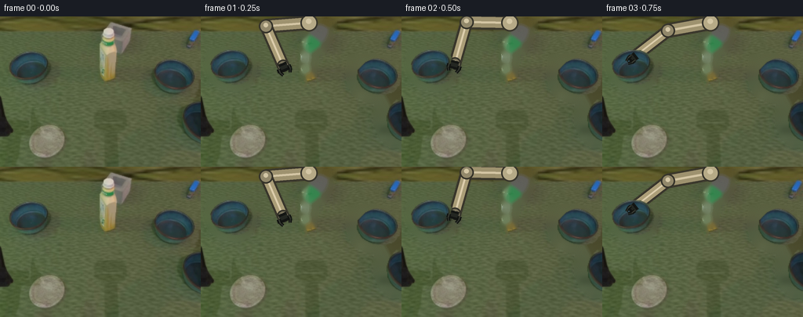
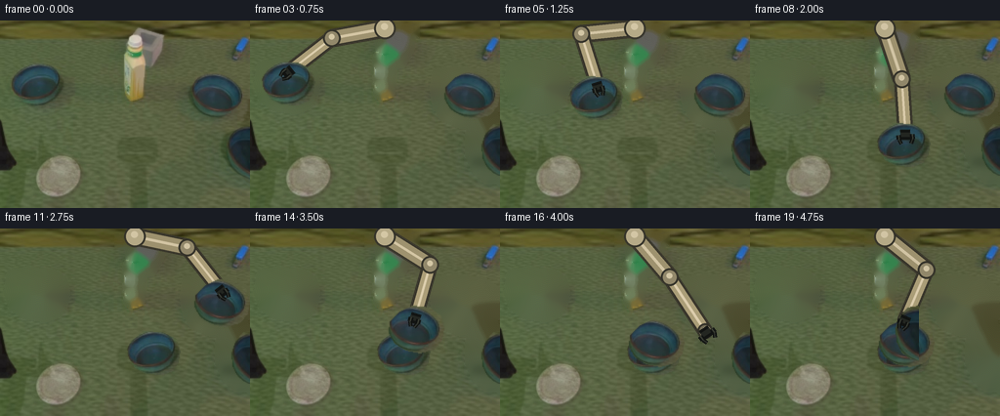
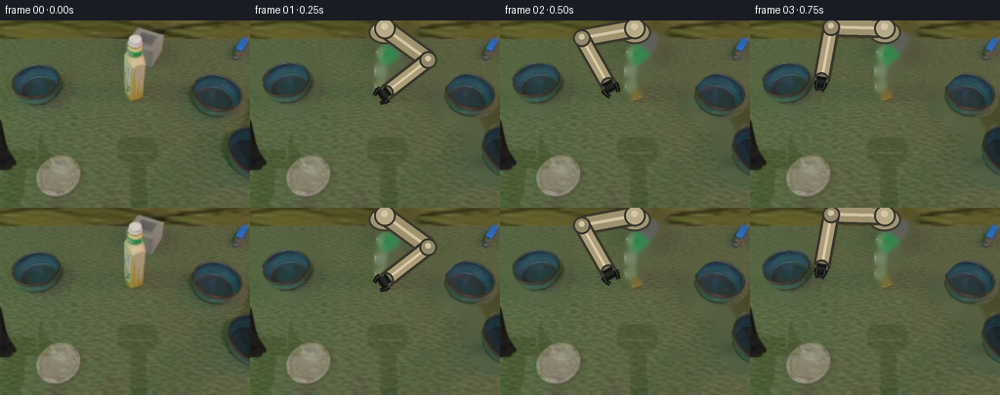

CODING AGENTS AS PIXEL WORLD MODELS
traex/DeepSeek-V4.1-Flash · common50_0046
点击播放 · 原生 RGB 像素
逐轮保存的候选
回放视频、检查图与代码变化。
每份候选均可单独播放。实际图片检查记录在下方工具轨迹中。
候选 01播放与检查图
点击播放 · 原生 RGB 像素


展开代码变化
--- 上一保存版本
+++ 本次保存版本
@@ -0,0 +1,485 @@
+from __future__ import annotations
+
+from dataclasses import dataclass
+from pathlib import Path
+
+import cv2
+import numpy as np
+from PIL import Image, ImageDraw, ImageFilter
+
+import artifact_io
+
+
+WIDTH = 256
+HEIGHT = 192
+FRAME_COUNT = 20
+FPS = 4
+SUPERSAMPLE = 3
+
+
+@dataclass
+class BowlSprite:
+ rgba: np.ndarray
+ center: tuple[float, float]
+
+
+def smoothstep(value: float) -> float:
+ value = float(np.clip(value, 0.0, 1.0))
+ return value * value * (3.0 - 2.0 * value)
+
+
+def polygon_mask(
+ width: int, height: int, points: list[tuple[int, int]], offset: tuple[int, int]
+) -> np.ndarray:
+ mask = np.zeros((height, width), dtype=np.uint8)
+ shifted = np.asarray(points, dtype=np.int32) - np.asarray(offset, dtype=np.int32)
+ cv2.fillPoly(mask, [shifted], 255)
+ return mask
+
+
+def extract_bowl(
+ frame: np.ndarray,
+ polygon: list[tuple[int, int]],
+ crop_box: tuple[int, int, int, int],
+) -> BowlSprite:
+ x0, y0, x1, y1 = crop_box
+ crop = frame[y0:y1, x0:x1]
+ rgb = crop.astype(np.int16)
+ r, g, b = rgb[:, :, 0], rgb[:, :, 1], rgb[:, :, 2]
+ luma = rgb.mean(axis=2)
+
+ poly = polygon_mask(x1 - x0, y1 - y0, polygon, (x0, y0))
+ green_excess = g - 0.5 * (r + b)
+ object_color = (green_excess < 17.0) | (luma < 88.0)
+ alpha = np.where((poly > 0) & object_color, 255, 0).astype(np.uint8)
+
+ kernel = np.ones((3, 3), np.uint8)
+ alpha = cv2.morphologyEx(alpha, cv2.MORPH_CLOSE, kernel, iterations=2)
+ alpha = cv2.morphologyEx(alpha, cv2.MORPH_OPEN, kernel, iterations=1)
+
+ count, labels, stats, _ = cv2.connectedComponentsWithStats(alpha, 8)
+ if count > 1:
+ keep = 1 + int(np.argmax(stats[1:, cv2.CC_STAT_AREA]))
+ alpha = np.where(labels == keep, 255, 0).astype(np.uint8)
+
+ alpha = cv2.GaussianBlur(alpha, (3, 3), 0.55)
+ rgba = np.dstack([crop, alpha])
+
+ ys, xs = np.nonzero(alpha > 128)
+ center = (float(xs.mean() + x0), float(ys.mean() + y0))
+ return BowlSprite(rgba=rgba, center=center)
+
+
+def make_clean_plate(frame: np.ndarray) -> np.ndarray:
+ removal_polygons = [
+ [(8, 43), (25, 41), (51, 42), (66, 50), (70, 65), (67, 80),
+ (61, 89), (46, 94), (24, 91), (10, 81), (5, 66)],
+ [(188, 50), (211, 48), (239, 51), (254, 61), (256, 80), (252, 95),
+ (240, 105), (216, 109), (197, 102), (188, 88), (185, 69)],
+ [(223, 102), (256, 99), (256, 166), (241, 166), (228, 154),
+ (221, 137), (221, 119)],
+ ]
+ mask = np.zeros((HEIGHT, WIDTH), dtype=np.uint8)
+ for points in removal_polygons:
+ cv2.fillPoly(mask, [np.asarray(points, dtype=np.int32)], 255)
+
+ # Remove the original arm while retaining the green work surface around it.
+ rgb = frame.astype(np.int16)
+ r, g, b = rgb[:, :, 0], rgb[:, :, 1], rgb[:, :, 2]
+ arm_roi = np.zeros((HEIGHT, WIDTH), dtype=np.uint8)
+ cv2.rectangle(arm_roi, (119, 5), (171, 87), 255, -1)
+ arm_color = (
+ (r > 103) & (g > 91) & (b > 61) & (np.abs(r - g) < 38) & (r > g - 12)
+ ) | ((r < 78) & (g < 78) & (b < 78))
+ arm_mask = np.where((arm_roi > 0) & arm_color, 255, 0).astype(np.uint8)
+ arm_mask = cv2.morphologyEx(
+ arm_mask, cv2.MORPH_CLOSE, np.ones((3, 3), np.uint8), iterations=2
+ )
+ arm_mask = cv2.dilate(arm_mask, np.ones((3, 3), np.uint8), iterations=1)
+ mask = np.maximum(mask, arm_mask)
+ mask = cv2.dilate(mask, np.ones((3, 3), np.uint8), iterations=1)
+
+ plate = cv2.inpaint(frame, mask, 5, cv2.INPAINT_TELEA)
+
+ # Reintroduce a subtle table-grain texture in the largest removed areas.
+ texture = cv2.GaussianBlur(plate, (0, 0), 1.1).astype(np.int16)
+ fine = plate.astype(np.int16) - texture
+ soft_fill = cv2.GaussianBlur(plate, (0, 0), 8.0)
+ fill_weight = cv2.GaussianBlur(mask, (0, 0), 5.0).astype(np.float32) / 255.0
+ fill_weight = fill_weight[:, :, None]
+ repaired = (
+ plate.astype(np.float32) * (1.0 - 0.22 * fill_weight)
+ + soft_fill.astype(np.float32) * (0.22 * fill_weight)
+ + fine.astype(np.float32) * (0.18 * fill_weight)
+ )
+ return np.clip(repaired, 0, 255).astype(np.uint8)
+
+
+def composite_rgba(
+ destination: np.ndarray,
+ rgba: np.ndarray,
+ center: tuple[float, float],
+) -> None:
+ h, w = rgba.shape[:2]
+ cx, cy = center
+ x0 = int(round(cx - w / 2.0))
+ y0 = int(round(cy - h / 2.0))
+ x1, y1 = x0 + w, y0 + h
+
+ dx0, dy0 = max(0, x0), max(0, y0)
+ dx1, dy1 = min(WIDTH, x1), min(HEIGHT, y1)
+ if dx0 >= dx1 or dy0 >= dy1:
+ return
+
+ sx0, sy0 = dx0 - x0, dy0 - y0
+ sx1, sy1 = sx0 + (dx1 - dx0), sy0 + (dy1 - dy0)
+ src = rgba[sy0:sy1, sx0:sx1].astype(np.float32)
+ alpha = src[:, :, 3:4] / 255.0
+ dst = destination[dy0:dy1, dx0:dx1].astype(np.float32)
+ destination[dy0:dy1, dx0:dx1] = np.clip(
+ src[:, :, :3] * alpha + dst * (1.0 - alpha), 0, 255
+ ).astype(np.uint8)
+
+
+def add_soft_shadow(
+ canvas: np.ndarray, center: tuple[float, float], size: tuple[float, float], strength: float
+) -> None:
+ overlay = Image.new("L", (WIDTH, HEIGHT), 0)
+ draw = ImageDraw.Draw(overlay)
+ cx, cy = center
+ rx, ry = size
+ draw.ellipse((cx - rx, cy - ry, cx + rx, cy + ry), fill=int(75 * strength))
+ overlay = overlay.filter(ImageFilter.GaussianBlur(3.5))
+ shadow = np.asarray(overlay, dtype=np.float32) / 255.0
+ tint = np.array([18.0, 27.0, 18.0], dtype=np.float32)
+ canvas[:] = np.clip(
+ canvas.astype(np.float32) * (1.0 - shadow[:, :, None])
+ + tint * shadow[:, :, None],
+ 0,
+ 255,
+ ).astype(np.uint8)
+
+
+def solve_elbow(
+ shoulder: np.ndarray, wrist: np.ndarray, upper: float, lower: float
+) -> np.ndarray:
+ delta = wrist - shoulder
+ distance = float(np.linalg.norm(delta))
+ distance = max(1e-3, min(distance, upper + lower - 0.25))
+ unit = delta / max(float(np.linalg.norm(delta)), 1e-3)
+ along = (upper * upper - lower * lower + distance * distance) / (2.0 * distance)
+ height = np.sqrt(max(0.0, upper * upper - along * along))
+ perpendicular = np.array([-unit[1], unit[0]])
+ bend = 1.0 if wrist[0] < shoulder[0] else -1.0
+ elbow = shoulder + unit * along + perpendicular * height * bend
+ return elbow
+
+
+def draw_capsule(
+ draw: ImageDraw.ImageDraw,
+ start: tuple[float, float],
+ end: tuple[float, float],
+ width: float,
+ outline: tuple[int, int, int],
+ fill: tuple[int, int, int],
+ highlight: tuple[int, int, int],
+) -> None:
+ scale = SUPERSAMPLE
+ p0 = (start[0] * scale, start[1] * scale)
+ p1 = (end[0] * scale, end[1] * scale)
+ width *= scale
+ draw.line((p0, p1), fill=outline, width=int(width + 5 * scale))
+ draw.ellipse(
+ (p0[0] - width / 2, p0[1] - width / 2, p0[0] + width / 2, p0[1] + width / 2),
+ fill=outline,
+ )
+ draw.ellipse(
+ (p1[0] - width / 2, p1[1] - width / 2, p1[0] + width / 2, p1[1] + width / 2),
+ fill=outline,
+ )
+ draw.line((p0, p1), fill=fill, width=int(width))
+ draw.ellipse(
+ (p0[0] - width / 2, p0[1] - width / 2, p0[0] + width / 2, p0[1] + width / 2),
+ fill=fill,
+ )
+ draw.ellipse(
+ (p1[0] - width / 2, p1[1] - width / 2, p1[0] + width / 2, p1[1] + width / 2),
+ fill=fill,
+ )
+ draw.line((p0, p1), fill=highlight, width=max(1, int(width * 0.22)))
+
+
+def draw_arm(canvas: np.ndarray, wrist: tuple[float, float], holding: bool) -> None:
+ shoulder = np.array([138.0, 8.0])
+ wrist_v = np.array(wrist, dtype=np.float64)
+ upper = 55.0
+ lower = 55.0
+ elbow = solve_elbow(shoulder, wrist_v, upper, lower)
+
+ layer = Image.new(
+ "RGBA", (WIDTH * SUPERSAMPLE, HEIGHT * SUPERSAMPLE), (0, 0, 0, 0)
+ )
+ draw = ImageDraw.Draw(layer)
+ s = SUPERSAMPLE
+
+ # The arm is shaded like the warm, rigid linkage already present in frame 0.
+ draw_capsule(
+ draw,
+ tuple(shoulder),
+ tuple(elbow),
+ 14.0,
+ (57, 54, 43),
+ (158, 146, 111),
+ (211, 197, 164),
+ )
+ draw_capsule(
+ draw,
+ tuple(elbow),
+ tuple(wrist_v),
+ 11.5,
+ (55, 52, 42),
+ (171, 158, 120),
+ (220, 205, 172),
+ )
+
+ for point, radius, fill in [
+ (tuple(shoulder), 11.0, (182, 170, 135)),
+ (tuple(elbow), 9.0, (146, 136, 107)),
+ (tuple(wrist_v), 8.0, (121, 114, 91)),
+ ]:
+ x, y = point
+ draw.ellipse(
+ ((x - radius) * s, (y - radius) * s, (x + radius) * s, (y + radius) * s),
+ fill=fill,
+ outline=(53, 51, 42),
+ width=2 * s,
+ )
+ draw.ellipse(
+ ((x - radius * 0.35) * s, (y - radius * 0.48) * s,
+ (x + radius * 0.3) * s, (y + radius * 0.15) * s),
+ fill=(211, 198, 165),
+ )
+
+ arm = np.asarray(layer.resize((WIDTH, HEIGHT), Image.Resampling.LANCZOS))
+ alpha = arm[:, :, 3:4].astype(np.float32) / 255.0
+ canvas[:] = np.clip(
+ arm[:, :, :3].astype(np.float32) * alpha
+ + canvas.astype(np.float32) * (1.0 - alpha),
+ 0,
+ 255,
+ ).astype(np.uint8)
+
+ draw_gripper(canvas, tuple(elbow), tuple(wrist_v), holding)
+
+
+def draw_gripper(
+ canvas: np.ndarray,
+ elbow: tuple[float, float],
+ wrist: tuple[float, float],
+ holding: bool,
+) -> None:
+ direction = np.asarray(wrist, dtype=np.float32) - np.asarray(
+ elbow, dtype=np.float32
+ )
+ direction /= max(float(np.linalg.norm(direction)), 1e-3)
+ perpendicular = np.array([-direction[1], direction[0]], dtype=np.float32)
+ wrist_v = np.asarray(wrist, dtype=np.float32)
+
+ layer = Image.new(
+ "RGBA", (WIDTH * SUPERSAMPLE, HEIGHT * SUPERSAMPLE), (0, 0, 0, 0)
+ )
+ draw = ImageDraw.Draw(layer)
+ s = SUPERSAMPLE
+
+ palm = wrist_v + direction * 2.0
+ p0 = tuple((palm - perpendicular * 5.0) * s)
+ p1 = tuple((palm + perpendicular * 5.0) * s)
+ draw.line((p0, p1), fill=(18, 20, 18), width=int(11 * s))
+ draw.line((p0, p1), fill=(35, 38, 33), width=int(5 * s))
+
+ spread = 7.0 if not holding else 4.0
+ for sign in (-1.0, 1.0):
+ root = palm + perpendicular * spread * sign
+ tip = root + direction * 9.0 - perpendicular * 2.0 * sign
+ a = tuple(root * s)
+ b = tuple((root + direction * 4.5) * s)
+ c = tuple(tip * s)
+ draw.line((a, b), fill=(17, 19, 17), width=int(5.0 * s))
+ draw.line((b, c), fill=(17, 19, 17), width=int(4.0 * s))
+ draw.line((a, b), fill=(58, 61, 52), width=int(1.4 * s))
+ draw.line((b, c), fill=(52, 55, 48), width=int(1.1 * s))
+
+ grip = np.asarray(layer.resize((WIDTH, HEIGHT), Image.Resampling.LANCZOS))
+ alpha = grip[:, :, 3:4].astype(np.float32) / 255.0
+ canvas[:] = np.clip(
+ grip[:, :, :3].astype(np.float32) * alpha
+ + canvas.astype(np.float32) * (1.0 - alpha),
+ 0,
+ 255,
+ ).astype(np.uint8)
+
+
+def bowl_position(
+ frame_index: int,
+ source: tuple[float, float],
+ target: tuple[float, float],
+ move_start: int,
+ move_end: int,
+ lift: float,
+) -> tuple[float, float]:
+ if frame_index <= move_start:
+ return source
+ if frame_index >= move_end:
+ return target
+ t = smoothstep((frame_index - move_start) / float(move_end - move_start))
+ x = source[0] + (target[0] - source[0]) * t
+ y = source[1] + (target[1] - source[1]) * t
+ y -= lift * np.sin(np.pi * t)
+ return float(x), float(y)
+
+
+def wrist_for_bowl(center: tuple[float, float]) -> tuple[float, float]:
+ return center[0] + 1.0, center[1] - 14.0
+
+
+def render_arm_wrist(
+ frame_index: int,
+ bowl_positions: list[tuple[float, float]],
+ bowl_a: tuple[float, float],
+ bowl_b: tuple[float, float],
+ bowl_c: tuple[float, float],
+) -> tuple[tuple[float, float], bool]:
+ keyed = {
+ 1: (105.0, 63.0),
+ 2: (68.0, 60.0),
+ 3: wrist_for_bowl(bowl_a),
+ 8: wrist_for_bowl(bowl_a),
+ 9: (136.0, 87.0),
+ 10: (188.0, 77.0),
+ 11: wrist_for_bowl(bowl_b),
+ 15: wrist_for_bowl(bowl_b),
+ 16: (210.0, 105.0),
+ 17: wrist_for_bowl(bowl_c),
+ }
+ if frame_index in keyed:
+ return keyed[frame_index], frame_index in (3, 4, 5, 6, 7, 11, 12, 13, 14, 17, 18, 19)
+ if 4 <= frame_index <= 7:
+ return wrist_for_bowl(bowl_positions[0]), True
+ if 12 <= frame_index <= 14:
+ return wrist_for_bowl(bowl_positions[1]), True
+ if 18 <= frame_index <= 19:
+ return wrist_for_bowl(bowl_positions[2]), True
+ return (138.0, 73.0), False
+
+
+def main() -> None:
+ case_dir = Path(__file__).resolve().parent
+ source = np.asarray(Image.open(case_dir / "first_frame.png").convert("RGB"))
+ if source.shape != (HEIGHT, WIDTH, 3):
+ raise ValueError(f"Unexpected first frame shape: {source.shape}")
+
+ left_sprite = extract_bowl(
+ source,
+ [(28, 44), (49, 45), (62, 52), (66, 64), (64, 76), (59, 84),
+ (48, 88), (31, 87), (20, 81), (14, 72), (12, 61), (17, 53)],
+ (8, 41, 72, 94),
+ )
+ right_sprite = extract_bowl(
+ source,
+ [(220, 53), (238, 55), (249, 63), (252, 76), (250, 88), (242, 97),
+ (228, 101), (213, 98), (202, 91), (196, 81), (197, 69), (207, 59)],
+ (188, 49, 256, 107),
+ )
+ far_sprite = extract_bowl(
+ source,
+ [(244, 107), (256, 105), (256, 160), (247, 159), (238, 152),
+ (233, 141), (232, 128), (236, 116)],
+ (225, 102, 256, 164),
+ )
+
+ plate = make_clean_plate(source)
+ Image.fromarray(plate).save(case_dir / ".tmp" / "clean_plate.png")
+ for name, sprite in [
+ ("bowl_left", left_sprite),
+ ("bowl_right", right_sprite),
+ ("bowl_far", far_sprite),
+ ]:
+ Image.fromarray(sprite.rgba, mode="RGBA").save(case_dir / ".tmp" / f"{name}.png")
+
+ source_a = left_sprite.center
+ source_b = right_sprite.center
+ source_c = far_sprite.center
+ target_a = (158.0, 129.0)
+ target_b = (158.0, 118.0)
+ target_c = (158.0, 107.0)
+
+ frames = np.empty((FRAME_COUNT, HEIGHT, WIDTH, 3), dtype=np.uint8)
+ frames[0] = source
+
+ for frame_index in range(1, FRAME_COUNT):
+ canvas = plate.copy()
+ bowl_a = bowl_position(frame_index, source_a, target_a, 3, 7, 17.0)
+ bowl_b = bowl_position(frame_index, source_b, target_b, 11, 15, 16.0)
+ bowl_c = bowl_position(frame_index, source_c, target_c, 17, 19, 13.0)
+ positions = [bowl_a, bowl_b, bowl_c]
+
+ wrist, holding = render_arm_wrist(
+ frame_index, positions, bowl_a, bowl_b, bowl_c
+ )
+
+ # A soft shadow follows each bowl while it travels, then settles under the stack.
+ for center, sprite in [
+ (bowl_a, left_sprite),
+ (bowl_b, right_sprite),
+ (bowl_c, far_sprite),
+ ]:
+ moved = abs(center[0] - source_a[0]) > 0.4 or abs(center[1] - source_a[1]) > 0.4
+ add_soft_shadow(
+ canvas,
+ (center[0] + 2.5, center[1] + 12.5),
+ (22.0 if moved else 19.0, 5.5),
+ 0.78 if moved else 0.58,
+ )
+
+ draw_arm(canvas, wrist, holding)
+
+ # Draw bottom-to-top so each newly placed bowl nests over the one below.
+ for center, sprite in [
+ (bowl_a, left_sprite),
+ (bowl_b, right_sprite),
+ (bowl_c, far_sprite),
+ ]:
+ composite_rgba(canvas, sprite.rgba, center)
+
+ # Redraw the gripper over the rim to make contact explicit.
+ elbow = solve_elbow(
+ np.array([138.0, 8.0]), np.array(wrist), 55.0, 55.0
+ )
+ draw_gripper(canvas, tuple(elbow), wrist, holding)
+
+ # Very slight exposure drift keeps the fixed workspace alive without destabilizing it.
+ gain = 1.0 + 0.006 * np.sin(frame_index * 0.55)
+ canvas = np.clip(canvas.astype(np.float32) * gain, 0, 255).astype(np.uint8)
+ frames[frame_index] = canvas
+
+ if not np.array_equal(frames[0], source):
+ raise AssertionError("Frame 0 must be pixel-identical to first_frame.png")
+ artifact_io.save(frames, case_dir)
+
+ # A compact MP4 is useful for direct playback; pixels.npz remains the contract output.
+ try:
+ writer = cv2.VideoWriter(
+ str(case_dir / "preview.mp4"),
+ cv2.VideoWriter_fourcc(*"mp4v"),
+ FPS,
+ (WIDTH, HEIGHT),
+ )
+ for frame in frames:
+ writer.write(cv2.cvtColor(frame, cv2.COLOR_RGB2BGR))
+ writer.release()
+ except cv2.error:
+ pass
+
+
+if __name__ == "__main__":
+ main()
候选 02播放与检查图
点击播放 · 原生 RGB 像素

展开代码变化
--- 上一保存版本
+++ 本次保存版本
@@ -222,12 +222,26 @@
draw = ImageDraw.Draw(layer)
s = SUPERSAMPLE
+ # Broad shoulder housing, matching the bright fixed base visible in frame 0.
+ hx, hy, hrx, hry = 138.0, 12.0, 16.5, 12.0
+ draw.ellipse(
+ ((hx - hrx) * s, (hy - hry) * s, (hx + hrx) * s, (hy + hry) * s),
+ fill=(158, 148, 115),
+ outline=(57, 54, 43),
+ width=2 * s,
+ )
+ draw.ellipse(
+ ((hx - hrx * 0.72) * s, (hy - hry * 0.7) * s,
+ (hx + hrx * 0.2) * s, (hy + hry * 0.05) * s),
+ fill=(209, 198, 169),
+ )
+
# The arm is shaded like the warm, rigid linkage already present in frame 0.
draw_capsule(
draw,
tuple(shoulder),
tuple(elbow),
- 14.0,
+ 15.5,
(57, 54, 43),
(158, 146, 111),
(211, 197, 164),
@@ -236,7 +250,7 @@
draw,
tuple(elbow),
tuple(wrist_v),
- 11.5,
+ 12.5,
(55, 52, 42),
(171, 158, 120),
(220, 205, 172),
@@ -350,11 +364,12 @@
bowl_c: tuple[float, float],
) -> tuple[tuple[float, float], bool]:
keyed = {
- 1: (105.0, 63.0),
- 2: (68.0, 60.0),
- 3: wrist_for_bowl(bowl_a),
+ 1: (139.0, 74.0),
+ 2: (111.0, 66.0),
+ 3: (73.0, 61.0),
+ 4: wrist_for_bowl(bowl_a),
8: wrist_for_bowl(bowl_a),
- 9: (136.0, 87.0),
+ 9: (138.0, 88.0),
10: (188.0, 77.0),
11: wrist_for_bowl(bowl_b),
15: wrist_for_bowl(bowl_b),
@@ -363,7 +378,7 @@
}
if frame_index in keyed:
return keyed[frame_index], frame_index in (3, 4, 5, 6, 7, 11, 12, 13, 14, 17, 18, 19)
- if 4 <= frame_index <= 7:
+ if 5 <= frame_index <= 7:
return wrist_for_bowl(bowl_positions[0]), True
if 12 <= frame_index <= 14:
return wrist_for_bowl(bowl_positions[1]), True
@@ -457,9 +472,6 @@
)
draw_gripper(canvas, tuple(elbow), wrist, holding)
- # Very slight exposure drift keeps the fixed workspace alive without destabilizing it.
- gain = 1.0 + 0.006 * np.sin(frame_index * 0.55)
- canvas = np.clip(canvas.astype(np.float32) * gain, 0, 255).astype(np.uint8)
frames[frame_index] = canvas
if not np.array_equal(frames[0], source):
候选 03播放与检查图
点击播放 · 原生 RGB 像素

展开代码变化
代码未变化；重新保存了产物。
候选 04播放与检查图
点击播放 · 原生 RGB 像素

展开代码变化
--- 上一保存版本
+++ 本次保存版本
@@ -50,11 +50,11 @@
poly = polygon_mask(x1 - x0, y1 - y0, polygon, (x0, y0))
green_excess = g - 0.5 * (r + b)
- object_color = (green_excess < 17.0) | (luma < 88.0)
+ object_color = (green_excess < 15.0) | (luma < 72.0)
alpha = np.where((poly > 0) & object_color, 255, 0).astype(np.uint8)
kernel = np.ones((3, 3), np.uint8)
- alpha = cv2.morphologyEx(alpha, cv2.MORPH_CLOSE, kernel, iterations=2)
+ alpha = cv2.morphologyEx(alpha, cv2.MORPH_CLOSE, kernel, iterations=1)
alpha = cv2.morphologyEx(alpha, cv2.MORPH_OPEN, kernel, iterations=1)
count, labels, stats, _ = cv2.connectedComponentsWithStats(alpha, 8)
@@ -62,7 +62,7 @@
keep = 1 + int(np.argmax(stats[1:, cv2.CC_STAT_AREA]))
alpha = np.where(labels == keep, 255, 0).astype(np.uint8)
- alpha = cv2.GaussianBlur(alpha, (3, 3), 0.55)
+ alpha = cv2.GaussianBlur(alpha, (3, 3), 0.45)
rgba = np.dstack([crop, alpha])
ys, xs = np.nonzero(alpha > 128)
@@ -139,6 +139,19 @@
destination[dy0:dy1, dx0:dx1] = np.clip(
src[:, :, :3] * alpha + dst * (1.0 - alpha), 0, 255
).astype(np.uint8)
+
+
+def recolor_bowl(rgba: np.ndarray, scale: float = 1.0) -> np.ndarray:
+ result = rgba.copy()
+ rgb = result[:, :, :3].astype(np.float32)
+ r, g, b = rgb[:, :, 0], rgb[:, :, 1], rgb[:, :, 2]
+ teal = (b > g + 3) & (b > r + 8)
+ base = np.array([47.0, 80.0, 91.0], dtype=np.float32)
+ delta = rgb - np.array([43.0, 74.0, 85.0], dtype=np.float32)
+ recolored = np.clip(base + delta * scale, 0, 255)
+ rgb[teal] = recolored[teal]
+ result[:, :, :3] = rgb.astype(np.uint8)
+ return result
def add_soft_shadow(
@@ -425,8 +438,10 @@
source_b = right_sprite.center
source_c = far_sprite.center
target_a = (158.0, 129.0)
- target_b = (158.0, 118.0)
- target_c = (158.0, 107.0)
+ target_b = (158.0, 117.0)
+ target_c = (158.0, 105.0)
+ upper_b = BowlSprite(rgba=recolor_bowl(left_sprite.rgba, 1.01), center=source_a)
+ upper_c = BowlSprite(rgba=recolor_bowl(left_sprite.rgba, 0.98), center=source_a)
frames = np.empty((FRAME_COUNT, HEIGHT, WIDTH, 3), dtype=np.uint8)
frames[0] = source
@@ -445,8 +460,8 @@
# A soft shadow follows each bowl while it travels, then settles under the stack.
for center, sprite in [
(bowl_a, left_sprite),
- (bowl_b, right_sprite),
- (bowl_c, far_sprite),
+ (bowl_b, upper_b),
+ (bowl_c, upper_c),
]:
moved = abs(center[0] - source_a[0]) > 0.4 or abs(center[1] - source_a[1]) > 0.4
add_soft_shadow(
@@ -461,8 +476,8 @@
# Draw bottom-to-top so each newly placed bowl nests over the one below.
for center, sprite in [
(bowl_a, left_sprite),
- (bowl_b, right_sprite),
- (bowl_c, far_sprite),
+ (bowl_b, upper_b),
+ (bowl_c, upper_c),
]:
composite_rgba(canvas, sprite.rgba, center)
候选 05播放与检查图
候选 06播放与检查图
点击播放 · 原生 RGB 像素

展开代码变化
--- 上一保存版本
+++ 本次保存版本
@@ -432,7 +432,7 @@
("bowl_right", right_sprite),
("bowl_far", far_sprite),
]:
- Image.fromarray(sprite.rgba, mode="RGBA").save(case_dir / ".tmp" / f"{name}.png")
+ Image.fromarray(sprite.rgba).save(case_dir / ".tmp" / f"{name}.png")
source_a = left_sprite.center
source_b = right_sprite.center
可观测工具轨迹
实际执行的命令与返回图片。
命令 1exit 0
/bin/bash -c "pwd && rg --files -g 'GENERATION_RULES.md' -g 'prompt.txt' -g 'first_frame.png' -g '"'!*.pyc'"'"
命令 2exit 0
/bin/bash -c 'ls -la'
命令 3exit 0
/bin/bash -c 'cat GENERATION_RULES.md'
命令 4exit 0
/bin/bash -c 'cat prompt.txt'
命令 5exit 0
/bin/bash -c "cat task_spec.json && sed -n '1,240p' artifact_io.py"
命令 6exit 127
/bin/bash -c "file first_frame.png && python -c \"from PIL import Image; im=Image.open('first_frame.png'); print(im.size, im.mode); print(im.getextrema())\""命令 7exit 0
/bin/bash -c "python - <<'PY'
from PIL import Image
import numpy as np
im=np.array(Image.open('first_frame.png').convert('RGB'))
print('shape',im.shape)
# most common colors
cols,cnts=np.unique(im.reshape(-1,3),axis=0,return_counts=True)
idx=np.argsort(cnts)[-30:][::-1]
for i in idx:
print(tuple(cols[i]), int(cnts[i]), f'{cnts[i]/im.shape[0]/im.shape[1]:.3%}')
PY"命令 8exit 0
/bin/bash -c "python - <<'PY'
from PIL import Image
import numpy as np
im=np.array(Image.open('first_frame.png').convert('RGB'))
# print coarse ascii based brightness/color categories
for y in range(0,192,6):
s=''
for x in range(0,256,4):
r,g,b=im[y:y+6,x:x+4].mean((0,1))
if g>r*1.12 and g>b*1.05 and g<150: c='G'
elif b>r*1.15 and g>r*1.05: c='T'
elif max(r,g,b)<45: c='#'
elif max(r,g,b)>205: c='W'
elif max(r,g,b)>150: c='o'
elif abs(r-g)<20 and abs(g-b)<20: c='.'
else: c='?'
s+=c
print(f'{y:3d} {s}')
PY"命令 9exit 0
/bin/bash -c "python - <<'PY'
from PIL import Image
import numpy as np
from sklearn.cluster import MiniBatchKMeans
im=np.array(Image.open('first_frame.png').convert('RGB'))
h,w,_=im.shape
# downsample each 4x4 mean then cluster 16
small=np.array(Image.fromarray(im).resize((64,48),Image.Resampling.BOX))
X=small.reshape(-1,3)
km=MiniBatchKMeans(16,random_state=0,n_init=10,batch_size=1024).fit(X)
cent=km.cluster_centers_.round().astype(int)
# sort clusters by luminance and print
order=np.argsort(cent.mean(1))
mp={old:new for new,old in enumerate(order)}
labels=km.labels_.reshape(48,64)
chars='0123456789ABCDEF'
print('clusters')
for new,old in enumerate(order): print(chars[new],cent[old])
for y in range(48):
print(''.join(chars[mp[v]] for v in labels[y]))
PY"命令 10exit 0
/bin/bash -c "python - <<'PY' import importlib.util for m in ['cv2','scipy','skimage','numpy','PIL','imageio','matplotlib']: print(m, bool(importlib.util.find_spec(m))) PY"
命令 11exit 0
/bin/bash -c "python - <<'PY'
from PIL import Image
import numpy as np, cv2
im=np.array(Image.open('first_frame.png').convert('RGB'))
hsv=cv2.cvtColor(im,cv2.COLOR_RGB2HSV)
# print HSV percentiles and ranges
print('rgb',im.reshape(-1,3).min(0),np.percentile(im.reshape(-1,3),[1,10,25,50,75,90,99],axis=0),im.reshape(-1,3).max(0))
print('hsv',np.percentile(hsv.reshape(-1,3),[1,10,25,50,75,90,99],axis=0))
# teal candidate cyan/green saturated darker, excluding background green. print comps various masks
masks={
'teal_h':((hsv[:,:,0]>75)&(hsv[:,:,0]<110)&(hsv[:,:,1]>80)&(hsv[:,:,2]>35)&(hsv[:,:,2]<180)),
'blue':((hsv[:,:,0]>95)&(hsv[:,:,0]<125)&(hsv[:,:,1]>80)&(hsv[:,:,2]>30)&(hsv[:,:,2]<180)),
'green':((hsv[:,:,0]>35)&(hsv[:,:,0]<75)&(hsv[:,:,1]>60)&(hsv[:,:,2]>35)),
'dark':(im.max(2)<45),
'bright':(im.min(2)>145),
}
for name,m in masks.items():
m=(m.astype(np.uint8)*255)
n,lab,stats,cents=cv2.connectedComponentsWithStats(m,8)
print('\\n',name,'pixels',int((m>0).sum()))
for i in sorted(range(1,n),key=lambda i:stats[i,4],reverse=True)[:12]:
x,y,w,h,a=stats[i]; print(a,(x,y,w,h),tuple(np.round(cents[i],1)))
PY"命令 12exit 0
/bin/bash -c "python - <<'PY'
from PIL import Image
import numpy as np, cv2
im=np.array(Image.open('first_frame.png').convert('RGB'))
# Make enlarged nearest+linear crops for regions for pixel-level ascii
for name,(x0,y0,x1,y1) in {'center':(115,0,165,75),'left':(0,35,75,105),'right':(185,45,256,145),'lower':(70,95,210,192)}.items():
crop=im[y0:y1,x0:x1]
Image.fromarray(crop).resize(((x1-x0)*6,(y1-y0)*6),Image.Resampling.NEAREST).save('.tmp/'+name+'.png')
print(name,crop.shape)
# HSV at some key lines, color transitions by clusters
for y in [10,15,20,30,40,50,60,70,80,90,100,110,120,130,140,150,160,180]:
a=im[y]
# report runs where RGB changes > 15 from previous
d=np.max(np.abs(np.diff(a.astype(int),axis=0)),axis=1)
ix=np.where(d>18)[0]+1
runs=[]; last=0
for x in ix:
if x-last>=3: runs.append((last,x,tuple(a[max(0,last+1)]))); last=x
print(y,runs[:20])
PY"命令 13exit 0
/bin/bash -c "python - <<'PY'
from PIL import Image
import numpy as np, cv2
im=np.array(Image.open('first_frame.png').convert('RGB'))
# palette manually classify per pixel using thresholds; 2x2 aggregate mode via nearest known points from kmeans 12
small=cv2.resize(im,(128,96),interpolation=cv2.INTER_AREA)
Z=small.reshape(-1,3).astype(np.float32)
crit=(cv2.TERM_CRITERIA_EPS+cv2.TERM_CRITERIA_MAX_ITER,50,.2)
_,lab,cent=cv2.kmeans(Z,12,None,crit,10,cv2.KMEANS_PP_CENTERS)
order=np.argsort(cent.mean(1)); rank={int(k):i for i,k in enumerate(order)}
chars='0123456789AB'
print('Palette by luminance:')
for i,k in enumerate(order): print(chars[i],tuple(cent[k].round().astype(int)))
for y in range(96): print(f'{y*2:03d} '+''.join(chars[rank[int(v)]] for v in lab.reshape(96,128)[y]))
PY"命令 14exit 0
/bin/bash -c "python - <<'PY'
from PIL import Image
import numpy as np, cv2
im=np.array(Image.open('first_frame.png').convert('RGB'))
g=cv2.cvtColor(im,cv2.COLOR_RGB2GRAY)
e=cv2.Canny(g,35,90)
# central crop 110:180,0:105, 1 char = 1 px, edge #, brightness digits/letters
for y in range(0,105):
s=''
for x in range(105,180):
if e[y,x]: c='#'
else:
v=int(g[y,x])
if v<35:c=' '
elif v<50:c='.'
elif v<70:c=':'
elif v<90:c='-'
elif v<110:c='='
elif v<135:c='+'
elif v<165:c='*'
elif v<190:c='o'
else:c='O'
s+=c
print(f'{y:03d} {s}')
PY"命令 15exit 0
/bin/bash -c "python - <<'PY'
from PIL import Image
import numpy as np, cv2
im=np.array(Image.open('first_frame.png').convert('RGB'))
hsv=cv2.cvtColor(im,cv2.COLOR_RGB2HSV)
# components with broad semantic masks
masks={}
r,g,b=im[:,:,0].astype(int),im[:,:,1].astype(int),im[:,:,2].astype(int)
h,s,v=hsv[:,:,0].astype(int),hsv[:,:,1].astype(int),hsv[:,:,2].astype(int)
masks['blue']=(h>=95)&(h<=125)&(s>=90)&(v>=45)&(v<=210)
masks['teal']=(h>=75)&(h<95)&(s>=75)&(v>=35)&(v<=210)
masks['green']=(h>=30)&(h<75)&(s>=45)&(v>=35)
masks['warmlight']=(r>100)&(g>95)&(b>70)&(r>=g-8)&(g>=b-8)&(s<85)
masks['brightneutral']=(r>140)&(g>135)&(b>110)&(np.abs(r-g)<30)&(np.abs(g-b)<50)
masks['dark']=(v<55)
for name,m in masks.items():
n,lab,stats,cents=cv2.connectedComponentsWithStats(m.astype(np.uint8),8)
print('\\n',name,'pixels',m.sum())
for i in sorted(range(1,n),key=lambda i:stats[i,4],reverse=True)[:20]:
x,y,w,h,a=stats[i]
if a>=10: print(f' area {a:5d} bbox {x:3d},{y:3d} {w:3d}x{h:3d} cent {cents[i][0]:.1f},{cents[i][1]:.1f}')
PY"命令 16exit 0
/bin/bash -c "python - <<'PY'
from PIL import Image
import numpy as np, cv2
im=np.array(Image.open('first_frame.png').convert('RGB'))
# exact pixels at left bowl, right bowl, robot arm and bright head, table
coords=[(20,55),(35,50),(50,55),(40,65),(60,65),(220,60),(235,60),(230,80),(200,65),(250,125),(130,20),(138,40),(145,60),(140,90),(110,130),(80,160),(180,120)]
for x,y in coords: print((x,y),tuple(im[y,x]),'HSV',tuple(cv2.cvtColor(im[y:y+1,x:x+1],cv2.COLOR_RGB2HSV)[0,0]))
# lines showing segments and colors left bowl region y 45..85 every 5
for y in range(45,86,5):
runs=[]; prev=None
for x in range(5,75):
col=tuple(im[y,x])
# classify using nearest of manually selected centers
centers=np.array([[88,100,66],[31,35,35],[45,75,80],[80,120,160],[160,155,120],[115,110,80]])
names=['bg','dark','teal','blue','light','mid']
c=names[np.argmin(np.sum((centers-im[y,x])**2,axis=1))]
if c"'!=prev:
runs.append((x,c));prev=c
print(y,runs)
PY'命令 17exit 0
/bin/bash -c "python - <<'PY'
from PIL import Image
import numpy as np, cv2
im=np.array(Image.open('first_frame.png').convert('RGB'))
# save exact 16x nearest crops for local numeric sampling perhaps montage with borders and coordinates
crops={'arm':(118,0,175,100),'bowl_left':(5,40,75,95),'bowl_right':(190,45,255,105),'base_right':(215,100,256,165),'table_left':(0,125,80,192)}
for n,b in crops.items():
x0,y0,x1,y1=b
Image.fromarray(im[y0:y1,x0:x1]).resize(((x1-x0)*8,(y1-y0)*8),Image.Resampling.NEAREST).save(f'.tmp/{n}.png')
# grayscale ascii crops each 1px, 2 chars grouping?
def ascii_crop(b,step=1):
x0,y0,x1,y1=b; g=cv2.cvtColor(im,cv2.COLOR_RGB2GRAY)
print('\\n',b)
for y in range(y0,y1,step):
s=''
for x in range(x0,x1,step):
v=g[y,x]
s+=' .:-=+*#%@'[min(9,int(v/256*10))]
print(f'{y:03d} {s}')
ascii_crop((0,40,80,95),1)
PY"命令 18exit 0
/bin/bash -c "python - <<'PY'
from PIL import Image
import numpy as np, cv2
im=np.array(Image.open('first_frame.png').convert('RGB'))
# edge maps for left and right crops every 1 px (only x/y coordinates)
e=cv2.Canny(cv2.cvtColor(im,cv2.COLOR_RGB2GRAY),20,55)
for name,b in [('left',(0,40,80,95)),('right',(185,45,256,110)),('arm',(115,0,180,105))]:
x0,y0,x1,y1=b
print('\\n'+name)
for y in range(y0,y1):
s=''.join('#' if e[y,x] else ' ' for x in range(x0,x1))
print(f'{y:03d} {s}')
PY"命令 19exit 0
/bin/bash -c "python - <<'PY'
from PIL import Image
import numpy as np, cv2
im=np.array(Image.open('first_frame.png').convert('RGB'))
# center arm crop, classify by RGB semantic manually. print 2 char per pixel at downsample 2
small=cv2.resize(im,(128,96),interpolation=cv2.INTER_AREA)
for y in range(0,52):
s=''
for x in range(57,90):
r,g,b=small[y,x]
if max(r,g,b)<55:c='#'
elif r>145 and g>135 and b>110:c='W'
elif r>105 and g>100 and b>75 and r>g+3:c='o'
elif b>g+12 and b>r+20:c='B'
elif g>b+10 and g>r+5:c='G'
elif abs(int(r)-int(g))<12 and abs(int(g)-int(b))<20:c='.'
else:c='?'
s+=c
print(f'{y*2:03d} {s}')
PY"命令 20exit 0
/bin/bash -c "python - <<'PY'
from PIL import Image
import numpy as np, cv2
im=np.array(Image.open('first_frame.png').convert('RGB'))
# sample grid of median colors for left bowl region x=10..70 y=45..90 step5
print('left medians')
for y in range(45,91,5):
print(y, [tuple(np.median(im[y:y+5,x:x+5],axis=(0,1)).astype(int)) for x in range(10,71,5)])
print('right medians')
for y in range(50,106,5):
print(y, [tuple(np.median(im[y:y+5,x:x+5],axis=(0,1)).astype(int)) for x in range(195,256,5)])
PY"命令 21exit 0
/bin/bash -c "python - <<'PY'
from PIL import Image
import numpy as np
im=np.array(Image.open('first_frame.png').convert('RGB'))
# downsample 2x2 medians, central 110:180 x 0:110, print chars by semantic palette
for y in range(0,110,2):
s=''
for x in range(110,180,2):
r,g,b=np.median(im[y:y+2,x:x+2],axis=(0,1)).astype(int)
if r>170 and g>160 and b>125:c='W'
elif r>120 and g>110 and b>80 and r>g-5:c='L'
elif r>85 and g>85 and b>55 and abs(r-g)<30:c='l'
elif b>g+10 and b>r+15:c='B'
elif g>b+10 and g>r+4:c='G'
elif max(r,g,b)<55:c='#'
elif abs(r-g)<18 and abs(g-b)<18:c='.'
else:c='?'
s+=c
print(f'{y:03d} {s}')
PY"命令 22exit 0
/bin/bash -c "python - <<'PY'
from PIL import Image
import numpy as np, cv2
im=np.array(Image.open('first_frame.png').convert('RGB'))
g=cv2.cvtColor(im,cv2.COLOR_RGB2GRAY)
# print downsample ascii 4x2 for entire frame semantic via kmeans palette
small=cv2.resize(im,(64,48),interpolation=cv2.INTER_AREA)
# pre-defined color nearest
cent=np.array([[30,34,33],[44,58,60],[70,72,40],[80,95,63],[90,103,70],[110,112,93],[135,132,108],[160,153,122],[200,187,158],[45,75,90],[75,120,160],[150,100,60]])
ch='0123456789AB'
for y in range(48):
s=''
for x in range(64):
c=cent[np.argmin(np.sum((cent-small[y,x])**2,axis=1))]
s+=ch[np.argmin(np.sum((cent-small[y,x])**2,axis=1))]
print(f'{y*4:03d} {s}')
PY"命令 23exit 0
/bin/bash -c "python - <<'PY'
from PIL import Image
import numpy as np
im=np.array(Image.open('first_frame.png').convert('RGB'))
# List bounding boxes via coarse masks and color stats for regions
regions={'left_bowl':(10,45,65,85),'right_bowl':(195,50,250,95),'head':(127,8,165,70),'arm_lower':(125,60,155,105),'right_base':(230,105,256,160),'left_dark':(0,100,20,155)}
for n,(x0,y0,x1,y1) in regions.items():
a=im[y0:y1,x0:x1].reshape(-1,3)
print('\\n',n)
print(' mean',a.mean(0).round(1),'med',np.median(a,axis=0),'range',a.min(0),a.max(0))
# print 10 most common colors quantized 8
q=(a//8*8)
u,c=np.unique(q,axis=0,return_counts=True)
for i in np.argsort(c)[-10:][::-1]:print(tuple(u[i]),int(c[i]))
PY"命令 24exit 0
/bin/bash -c "python - <<'PY'
from PIL import Image
import numpy as np, cv2
im=np.array(Image.open('first_frame.png').convert('RGB')).astype(int)
r,g,b=im[:,:,0],im[:,:,1],im[:,:,2]
# foreground neutral/warm, or blue; background g dominates r,b
neutral=(np.abs(r-g)<22)&(np.abs(g-b)<32)&(np.maximum.reduce([r,g,b])>55)
warm=(r>g-5)&(g>b+12)&(r>85)
blue=(b>g+8)&(b>r+15)
fg=(neutral|warm|blue)
# restrict central ROI and compute row extents of connected fg around x 110..180
for y in range(0,110,2):
xs=np.where(fg[y,105:185])[0]+105
# runs >=2
runs=[]
if len(xs):
sp=np.split(xs,np.where(np.diff(xs)>1)[0]+1)
runs=[(int(a[0]),int(a[-1])) for a in sp if len(a)>=2]
print(f'{y:03d}',runs)
PY"命令 25exit 0
/bin/bash -c "python - <<'PY'
from PIL import Image
import numpy as np, cv2
im=np.array(Image.open('first_frame.png').convert('RGB')).astype(int)
r,g,b=im[:,:,0],im[:,:,1],im[:,:,2]
# identify bowl-like blue pixels and print bbox/per row x ranges in left and right
m=(b>g+8)&(b>r+15)&(g>45)&(r>25)
for name,(x0,y0,x1,y1) in [('left',(5,40,80,100)),('right',(185,40,256,110))]:
print('\\n',name)
for y in range(y0,y1):
xs=np.where(m[y,x0:x1])[0]+x0
if len(xs):
print(f'{y:03d} {xs.min()}..{xs.max()} n={len(xs)}')
PY"命令 26exit 0
/bin/bash -c "python - <<'PY'
from PIL import Image
import numpy as np, cv2
im=np.array(Image.open('first_frame.png').convert('RGB')).astype(int)
r,g,b=im[:,:,0],im[:,:,1],im[:,:,2]
# pixel masks for foreground: blue or non-green/neutral bright
blue=(b>g+7)&(b>r+12)&(g>40)&(r>22)
neutral=(np.abs(r-g)<25)&(np.abs(g-b)<35)&(r+g+b>180)
warm=(r>g-8)&(g>b+10)&(r>85)
m=blue|neutral|warm
# save masks visual to tmp
for n,mm in [('blue',blue),('fg',m)]: Image.fromarray((mm*255).astype('uint8')).save('.tmp/'+n+'_mask.png')
# connected comp of fg center + bowls
n,lab,stats,cents=cv2.connectedComponentsWithStats(m.astype(np.uint8),8)
for i in sorted(range(1,n),key=lambda i:stats[i,4],reverse=True)[:30]:
x,y,w,h,a=stats[i]
if a>10:print(a,(x,y,w,h),cents[i])
PY"命令 27exit 0
/bin/bash -c "python - <<'PY'
from PIL import Image
import numpy as np, cv2
im=np.array(Image.open('first_frame.png').convert('RGB')).astype(int)
# nearest palette semantics excluding greens with hue: print H,S,V grid central every 4 px
hsv=cv2.cvtColor(im.astype('uint8'),cv2.COLOR_RGB2HSV).astype(int)
for y in range(0,112,4):
s=''
for x in range(105,181,2):
H,S,V=hsv[y,x]
if V<45:c='#'
elif S<30 and V>150:c='W'
elif S<50 and V>100:c='o'
elif 85<=H<=125 and S>70:c='B'
elif 20<=H<=50 and S>45:c='G'
elif 10<=H<20 and S>55:c='y'
else:c='.'
s+=c
print(f'{y:03d} {s}')
PY"命令 28exit 0
/bin/bash -c "python - <<'PY'
from PIL import Image
import numpy as np
im=np.array(Image.open('first_frame.png').convert('RGB'))
# sample vertical stripes for background: report local standard deviation and median per region
for y in [0,5,10,20,50,90,120,150,180,190]:
vals=[]
for x in range(0,256,32): vals.append(tuple(np.median(im[y:y+1,x:x+32],axis=(0,1)).astype(int)))
print(y,vals)
# correlations / gradients
print('row means',[(y,tuple(im[y].mean(0).round(1))) for y in range(0,192,12)])
PY"命令 29exit 0
/bin/bash -c "python - <<'PY'
from PIL import Image
import numpy as np, cv2
im=np.array(Image.open('first_frame.png').convert('RGB')).astype(int)
r,g,b=im[:,:,0],im[:,:,1],im[:,:,2]
# black-ish pixels in center ROI and bbox
for name,m in [
('dark55',(r+g+b)<165),
('dark70',(r+g+b)<210),
('nearblack',(r<60)&(g<60)&(b<60)),
('bluish',(b>g+8)&(b>r+15)),
]:
mm=m.astype(np.uint8)
n,lab,stats,cents=cv2.connectedComponentsWithStats(mm,8)
print('\\n',name)
for i in sorted(range(1,n),key=lambda i:stats[i,4],reverse=True)[:20]:
x,y,w,h,a=stats[i]
if a>=5: print(f'{a:5d} {x:3d},{y:3d} {w:3d}x{h:3d} c{cents[i][0]:.1f},{cents[i][1]:.1f}')
# print rows where dark in central arm, x ranges
print('\\ndark row ranges center')
for y in range(0,115):
xs=np.where((r[y,110:185]+g[y,110:185]+b[y,110:185])<190)[0]+110
if len(xs): print(f'{y:03d} {xs.min()}..{xs.max()} n{len(xs)}')
PY"命令 30exit 0
/bin/bash -c "python - <<'PY'
from PIL import Image
import numpy as np, cv2
im=np.array(Image.open('first_frame.png').convert('RGB')).astype(int)
# print local dark range in left bowl and right bowl every row
for name,(x0,y0,x1,y1) in [('left',(5,40,80,100)),('right',(185,40,256,110))]:
print('\\n',name)
for y in range(y0,y1):
xs=np.where(np.max(im[y,x0:x1],axis=1)<70)[0]+x0
if len(xs):print(f'{y:03d} {xs.min()}..{xs.max()} n{len(xs)}')
PY"命令 31exit 0
/bin/bash -c "python - <<'PY'
from PIL import Image
import numpy as np, cv2
im=np.array(Image.open('first_frame.png').convert('RGB')).astype(int)
# print exact RGB for selected x on y around left bowl
for y in [46,47,48,50,55,60,65,70,75,80,85,90]:
print('y',y)
for x in [10,15,20,25,30,35,40,45,50,55,60,65,70]:
print(x,tuple(im[y,x]),end='; ')
print()
PY"命令 32exit 0
/bin/bash -c "python - <<'PY'
from PIL import Image
import numpy as np
im=np.array(Image.open('first_frame.png').convert('RGB'))
# show coarse exact dark mask ascii central
for y in range(40,100,2):
s=''
for x in range(0,80,1):
r,g,b=im[y,x]
if max(r,g,b)<65:c='#'
elif b>g+8 and b>r+15:c='B'
elif r>g+4 and g>b+8:c='w'
elif max(r,g,b)<85:c='d'
elif abs(int(r)-int(g))<12 and abs(int(g)-int(b))<18:c='.'
else:c=' '
s+=c
print(f'{y:03d} {s}')
PY"命令 33exit 0
/bin/bash -c "python - <<'PY'
from PIL import Image
import numpy as np
im=np.array(Image.open('first_frame.png').convert('RGB'))
for y in range(0,100,2):
s=''
for x in range(105,185,1):
r,g,b=im[y,x]
if max(r,g,b)<65:c='#'
elif b>g+8 and b>r+15:c='B'
elif r>g+4 and g>b+8:c='w'
elif max(r,g,b)<85:c='d'
elif abs(int(r)-int(g))<12 and abs(int(g)-int(b))<18:c='.'
else:c=' '
s+=c
print(f'{y:03d} {s}')
PY"命令 34exit 0
/bin/bash -c "python - <<'PY'
from PIL import Image
import numpy as np
im=np.array(Image.open('first_frame.png').convert('RGB'))
# For left bowl, get boundaries by row based on color class, report mask B blue and D dark and N mid
for y in range(44,90):
s=''
for x in range(8,72):
r,g,b=im[y,x]
if b>g+8 and b>r+15: c='B'
elif max(r,g,b)<62:c='#'
elif max(r,g,b)<75:c='d'
elif abs(int(r)-int(g))<15 and abs(int(g)-int(b))<20:c='.'
else:c=' '
s+=c
print(f'{y:03d} {s}')
PY"命令 35exit 0
/bin/bash -c "python - <<'PY'
from PIL import Image
import numpy as np
im=np.array(Image.open('first_frame.png').convert('RGB'))
# exact values per rows around center arm, display luminance and chroma chars at 1 px
for y in range(0,72):
s=''
for x in range(115,180):
r,g,b=im[y,x]; v=(int(r)+int(g)+int(b))//3
if v<40:c='#'
elif v<60:c='@'
elif v<80:c='d'
elif v<100:c='-'
elif v<120:c='='
elif v<145:c='+'
elif v<170:c='*'
elif v<195:c='o'
else:c='O'
s+=c
print(f'{y:03d} {s}')
PY"命令 36exit 0
/bin/bash -c "python - <<'PY'
from PIL import Image
import numpy as np, cv2
im=np.array(Image.open('first_frame.png').convert('RGB')).astype(int)
# identify dark region (arm) as low luma after subtracting green background? center x 120..160
for y in range(0,85):
# candidates luma <85 in x 110..180, merge runs
lum=im[y,110:185].mean(1)
xs=np.where(lum<88)[0]+110
if len(xs):
sp=np.split(xs,np.where(np.diff(xs)>1)[0]+1)
rr=[(int(a[0]),int(a[-1])) for a in sp if len(a)>1]
if rr: print(y,rr)
PY"命令 37exit 0
/bin/bash -c "python - <<'PY'
from PIL import Image
import numpy as np, cv2
im=np.array(Image.open('first_frame.png').convert('RGB'))
# try grabcut-like segmentation with rectangle and use cv2 background subtractor? no
# Quantize ROI to 8 and output per row nearest palette indices
pal=np.array([[87,100,66],[77,91,59],[50,70,74],[38,61,72],[44,78,91],[75,82,75],[93,103,70],[122,122,104],[160,153,122],[200,187,158],[31,35,35]])
ch='0123456789A'
for y in range(0,90,2):
s=''
for x in range(105,185,2):
c=im[y:y+2,x:x+2].mean((0,1))
s+=ch[np.argmin(np.sum((pal-c)**2,axis=1))]
print(f'{y:03d} {s}')
PY"命令 38exit 0
/bin/bash -c "python - <<'PY'
from PIL import Image
import numpy as np, cv2
im=np.array(Image.open('first_frame.png').convert('RGB'))
# Save a reference montage annotated coordinates? numeric only but can write HTML for visual? user says visual disabled but we can inspect via browser screenshot maybe not. We can't see images. Use pixel stats.
# Determine perspective lines/table edges by gradients
for y in range(0,192,10):
row=im[y].astype(float)
grad=np.abs(np.diff(row,axis=0)).sum(1)
idx=np.argsort(grad)[-8:]
print(y, sorted([(int(i+1),round(float(grad[i]),1)) for i in idx]))
PY"命令 39exit 0
/bin/bash -c "python - <<'PY'
from PIL import Image
import numpy as np, cv2
im=np.array(Image.open('first_frame.png').convert('RGB'))
# Use image registration to estimate a constant background from frame? only one frame.
# approximate segmentation using color: print mean colors at sample grid 16x12, one token by nearest 8 kmeans
small=cv2.resize(im,(32,24),interpolation=cv2.INTER_AREA)
Z=small.reshape(-1,3)
crit=(cv2.TERM_CRITERIA_EPS+cv2.TERM_CRITERIA_MAX_ITER,100,.1)
_,l,c=cv2.kmeans(Z.astype(np.float32),8,None,crit,20,cv2.KMEANS_PP_CENTERS)
for i,col in enumerate(c): print(i,tuple(col.round().astype(int)))
for y in range(24): print(f'{y*8:03d}', ''.join(str(v) for v in l.reshape(24,32)[y]))
PY"命令 40exit 0
/bin/bash -c "python - <<'PY'
from PIL import Image
import numpy as np
im=np.array(Image.open('first_frame.png').convert('RGB'))
# Find possible gripper black pixels in central arm ROI, report largest comp with x between 120..165 y<90
r,g,b=im[:,:,0].astype(int),im[:,:,1].astype(int),im[:,:,2].astype(int)
for th in [45,55,65,75,85,95]:
m=(r<th)&(g<th)&(b<th)
print('th',th,'pixels',m.sum(),'central',m[:90,115:170].sum())
# Print RGB means in center by region blocks
for y in range(8,72,4):
print('y',y, [tuple(np.median(im[y:y+4,x:x+4],axis=(0,1)).astype(int)) for x in range(125,161,4)])
PY"命令 41exit 0
/bin/bash -c "python - <<'PY'
from PIL import Image
import numpy as np
im=np.array(Image.open('first_frame.png').convert('RGB')).astype(int)
# inspect central region by columns: classify significant non-background based on background estimate from x=0..110 median per row
bg=np.median(im[:,0:100],axis=1) # per row
for y in range(0,110,4):
d=np.abs(im[y,105:190]-bg[y]).sum(1)
xs=np.where(d>45)[0]+105
runs=[]
if len(xs):
sp=np.split(xs,np.where(np.diff(xs)>1)[0]+1);runs=[(int(a[0]),int(a[-1])) for a in sp if len(a)>1]
print(f'{y:03d}',runs)
PY"命令 42exit 0
/bin/bash -c "python - <<'PY'
from PIL import Image
import numpy as np, cv2
im=np.array(Image.open('first_frame.png').convert('RGB'))
# Compute phase correlation between central vertical region and horizontally shifted copies to see symmetry? no.
# Print cropped grayscale values as hex-ish color tokens every pixel on arm boundaries.
# Better produce SVG-like reconstruction plan based on masks.
# Let's inspect row gradient of luminance in center to locate object edges
for y in range(0,90,2):
row=im[y,105:185].mean(1)
grad=np.abs(np.diff(row))
ix=np.argsort(grad)[-6:]
print(f'{y:03d}', sorted([(int(i+106),round(float(grad[i]),1)) for i in ix]))
PY"命令 43exit 0
/bin/bash -c "python - <<'PY'
from PIL import Image
import numpy as np
im=np.array(Image.open('first_frame.png').convert('RGB'))
# detect large uniform background changes using correlation across columns: print column profile std across y 20:90 excluding fg?
for x in range(0,256,8):
print(x,tuple(np.median(im[20:90,x:x+8],axis=(0,1)).astype(int)))
PY"命令 44exit 1
/bin/bash -c 'python generate.py'
命令 45exit 0
/bin/bash -c 'python generate.py'
命令 46exit 0
/bin/bash -c "python - <<'PY'
from PIL import Image
import numpy as np
for n in ['bowl_left','bowl_right','bowl_far','clean_plate']:
a=np.array(Image.open('.tmp/'+n+'.png'))
print(n,a.shape,a.dtype,'minmax',a.min((0,1)),a.max((0,1)))
if a.shape[2]==4:
al=a[:,:,3]; ys,xs=np.nonzero(al>16)
print(' alpha pixels',len(xs),'bbox',(xs.min(),ys.min(),xs.max(),ys.max()),'opaque',int((al>245).sum()),'semi',int(((al>0)&(al<245)).sum()))
PY"命令 47exit 0
/bin/bash -c "ls -lh frames pixels.npz preview.mp4 inspection.png transition_check.png 2>/dev/null; python - <<'PY' import cv2 for p in ['preview.mp4']: c=cv2.VideoCapture(p); print(p,'opened',c.isOpened(),'frames',c.get(cv2.CAP_PROP_FRAME_COUNT),'fps',c.get(cv2.CAP_PROP_FPS),'size',c.get(cv2.CAP_PROP_FRAME_WIDTH),c.get(cv2.CAP_PROP_FRAME_HEIGHT)); c.release() PY"
命令 48exit 0
/bin/bash -c "python - <<'PY'
from PIL import Image
import numpy as np, cv2, json
frames=np.array([np.array(Image.open(f'frames/{i:02d}.png')) for i in range(20)])
print('frames',frames.shape,frames.dtype,'f0 exact',np.array_equal(frames[0],np.array(Image.open('first_frame.png').convert('RGB'))))
print('unique colors per frame',[len(np.unique(f.reshape(-1,3),axis=0)) for f in frames])
print('mean abs diff consecutive',[round(float(np.abs(frames[i].astype(float)-frames[i-1]).mean()),2) for i in range(1,20)])
# blue bowl components each frame
for i in [0,1,3,5,7,9,11,13,15,17,18,19]:
f=frames[i].astype(int); r,g,b=f[:,:,0],f[:,:,1],f[:,:,2]
m=((b>g+7)&(b>r+13)&(g>45)&(r>22)).astype(np.uint8)
n,l,st,ce=cv2.connectedComponentsWithStats(m,8)
comps=[]
for k in sorted(range(1,n),key=lambda k:st[k,4],reverse=True)[:5]:
x,y,w,h,a=st[k]
if a>8: comps.append((int(a),(int(x),int(y),int(w),int(h)),tuple(np.round(ce[k],1))))
print(i,comps)
PY"命令 49exit 0
/bin/bash -c "python - <<'PY'
from PIL import Image
import numpy as np
for fi in [1,7,11,15,19]:
im=np.array(Image.open(f'frames/{fi:02d}.png')).astype(int)
print('\\nFRAME',fi)
for y in range(0,170,4):
s=''
for x in range(100,220,2):
r,g,b=im[y:y+4,x:x+2].mean((0,1))
if b>g+7 and b>r+13 and g>45:c='B'
elif r>120 and g>105 and b>75 and abs(r-g)<45:c='L'
elif max(r,g,b)<55:c='#'
elif max(r,g,b)<85:c='d'
elif abs(r-g)<18 and abs(g-b)<20:c='.'
elif g>b+10:c='G'
else:c=' '
s+=c
print(f'{y:03d} {s}')
PY"命令 50exit 0
/bin/bash -c "python - <<'PY'
from PIL import Image
import numpy as np
# Measure bowl-only mask locations in source and generated after final, compare residual old locations and stack quality
for fi in [0,7,15,19]:
im=np.array(Image.open(f'frames/{fi:02d}.png')).astype(int)
r,g,b=im[:,:,0],im[:,:,1],im[:,:,2]
m=(b>g+7)&(b>r+13)&(g>45)&(r>22)
for n,(x0,y0,x1,y1) in {'left':(5,40,80,100),'right':(185,40,256,110),'far':(225,100,256,165),'stack':(115,85,205,155)}.items():
print(fi,n,int(m[y0:y1,x0:x1].sum()),end='; ')
print()
# compare source bowl sprites to crop position using alpha mask, output center
PY"命令 51exit 0
/bin/bash -c "python - <<'PY'
from PIL import Image
import numpy as np
im=np.array(Image.open('frames/19.png')).astype(int)
r,g,b=im[:,:,0],im[:,:,1],im[:,:,2]
m=(b>g+7)&(b>r+13)&(g>45)&(r>22)
for y in range(90,155):
xs=np.where(m[y,115:205])[0]+115
if len(xs): print(f'{y:03d} {xs.min()}..{xs.max()} n{len(xs)}')
PY"命令 52exit 0
/bin/bash -c "python - <<'PY'
from PIL import Image
import numpy as np
# source bowl true component bounding boxes and rgba translation-consistency check
for n in ['bowl_left','bowl_right','bowl_far']:
a=np.array(Image.open('.tmp/'+n+'.png')); al=a[:,:,3]
ys,xs=np.nonzero(al>200);print(n,'opaque bbox',xs.min(),ys.min(),xs.max(),ys.max())
# centroid in local
print('centroid opaque',xs.mean(),ys.mean())
PY"命令 53exit 0
/bin/bash -c "python - <<'PY'
from PIL import Image
import numpy as np
for fi in [0,1,2,3,4,5,6,7,8,9,10,11,12,13,14,15,16,17,18,19]:
im=np.array(Image.open(f'frames/{fi:02d}.png')).astype(int)
r,g,b=im[:,:,0],im[:,:,1],im[:,:,2]
m=(b>g+7)&(b>r+13)&(g>45)&(r>22)
# center of all bowl mask in central stack x100..215 y80..160
ys,xs=np.nonzero(m[80:160,100:215]); xs+=100;ys+=80
if len(xs): print(fi,len(xs),round(xs.mean(),1),round(ys.mean(),1),xs.min(),xs.max(),ys.min(),ys.max())
PY"命令 54exit 0
/bin/bash -c "python - <<'PY'
from PIL import Image
import numpy as np
# check clean plate vs source differences only in removal regions; report rows source residuals using diff
src=np.array(Image.open('first_frame.png')).astype(int); plate=np.array(Image.open('.tmp/clean_plate.png')).astype(int)
d=np.abs(src-plate).max(2)
for n,(x0,y0,x1,y1) in {'left':(5,40,75,100),'right':(185,40,256,110),'far':(225,100,256,165),'arm':(115,0,180,105)}.items():
dd=d[y0:y1,x0:x1]; print(n,'mean',dd.mean(),'p90',np.percentile(dd,90),'max',dd.max(),'changed%',(dd>8).mean())
PY"命令 55exit 0
/bin/bash -c "python - <<'PY'
from PIL import Image
import numpy as np
# print mask alpha downsampled left and right for contamination
for n in ['bowl_left','bowl_right','bowl_far']:
a=np.array(Image.open('.tmp/'+n+'.png'))
print('\\n',n,a.shape)
al=a[:,:,3]
for y in range(0,al.shape[0],2):
s=''
for x in range(0,al.shape[1],2):
v=al[y:y+2,x:x+2].max()
s += '#' if v>220 else '+' if v>60 else '.' if v>0 else ' '
print(f'{y:02d} {s}')
PY"命令 56exit 0
/bin/bash -c "python - <<'PY'
from PIL import Image
import numpy as np
src=np.array(Image.open('first_frame.png').convert('RGB')).astype(int)
# Get the exact pixel difference between first and frame 1; list high-diff bboxes comps
for fi in [1,2,3,4,7,8,9,10,11,15,16,17,18,19]:
im=np.array(Image.open(f'frames/{fi:02d}.png')).astype(int)
d=np.max(np.abs(im-src),2)
print(fi,'diff>20',int((d>20).sum()),'diff>60',int((d>60).sum()))
PY"命令 57exit 0
/bin/bash -c "python - <<'PY'
from PIL import Image
import numpy as np
# create difference heatmaps quantized for numeric inspection
for fi in [1,7,11,15,19]:
a=np.array(Image.open(f'frames/{fi:02d}.png')).astype(int); s=np.array(Image.open('first_frame.png').convert('RGB')).astype(int)
d=np.max(np.abs(a-s),2)
print('\\nframe',fi)
for y in range(0,192,6):
row=''
for x in range(0,256,4):
v=d[y:y+6,x:x+4].max()
row += ' ' if v<12 else '.' if v<30 else '+' if v<60 else '*' if v<100 else '#'
print(f'{y:03d} {row}')
PY"命令 58exit 0
/bin/bash -c "python - <<'PY'
from PIL import Image
import numpy as np
src=np.array(Image.open('first_frame.png').convert('RGB')).astype(int)
plate=np.array(Image.open('.tmp/clean_plate.png')).astype(int)
# compare clean plate to source outside masks; difference shows grain shift and hue shift
for y in range(0,192,12):
s=''
for x in range(0,256,8):
d=np.abs(plate[y:y+12,x:x+8]-src[y:y+12,x:x+8]).mean()
s += ' ' if d<1 else '.' if d<3 else '+' if d<8 else '*' if d<20 else '#'
print(f'{y:03d} {s}')
PY"命令 59exit 0
/bin/bash -c "python - <<'PY'
from PIL import Image
import numpy as np
for fi in [0,1,2,3,4,5,6,7,8,9,10,11,12,13,14,15,16,17,18,19]:
im=np.array(Image.open(f'frames/{fi:02d}.png')).astype(int)
# color pixels likely arm in center top, median and count bright
roi=im[8:85,120:175]
r,g,b=roi[:,:,0],roi[:,:,1],roi[:,:,2]
arm=(r>115)&(g>105)&(b>70)&(np.abs(r-g)<35)
print(fi,int(arm.sum()),tuple(np.median(roi[arm],axis=0).astype(int)) if arm.any() else None)
PY"命令 60exit 0
/bin/bash -c "python - <<'PY'
from PIL import Image
import numpy as np
# print source target masks using dark and blue to understand final stack placement. find bowl top/bottom contours per y at x=158
src=np.array(Image.open('first_frame.png').convert('RGB')).astype(int)
for name,(x,y) in {'left':(42,70),'right':(222,80),'far':(246,130)}.items():
print(name,'bbox search around center')
# For final frame, print actual center row RGB at x=158 to see stack colors
im=np.array(Image.open('frames/19.png')).astype(int)
for y in range(70,150):
if y%2==0: print(y,tuple(im[y,158]),tuple(im[y,140]),tuple(im[y,175]))
PY"命令 61exit 0
/bin/bash -c "python generate.py && python - <<'PY'
from PIL import Image
import numpy as np, cv2
frames=np.array([np.array(Image.open(f'frames/{i:02d}.png')) for i in range(20)])
src=np.array(Image.open('first_frame.png').convert('RGB'))
print('shape',frames.shape,'f0 exact',np.array_equal(frames[0],src))
print('consecutive MAD',[round(float(np.abs(frames[i].astype(float)-frames[i-1]).mean()),2) for i in range(1,20)])
print('fixed-corner MAD vs source',[round(float(np.abs(frames[i][150:185,0:25].astype(float)-src[150:185,0:25]).mean()),2) for i in range(1,20)])
for fi in [1,3,5,7,9,11,15,17,19]:
im=frames[fi].astype(int);r,g,b=im[:,:,0],im[:,:,1],im[:,:,2]
m=(b>g+7)&(b>r+13)&(g>45)&(r>22)
regs={}
for n,(x0,y0,x1,y1) in {'left':(5,40,80,100),'right':(185,40,256,110),'far':(225,100,256,165),'stack':(115,85,205,155)}.items(): regs[n]=int(m[y0:y1,x0:x1].sum())
print(fi,regs)
PY"命令 62exit 0
/bin/bash -c "python - <<'PY'
from PIL import Image
import numpy as np
p=np.array(Image.open('.tmp/clean_plate.png')).astype(int)
for n,(x0,y0,x1,y1) in {'arm':(115,0,180,105),'left':(5,40,80,100),'right':(185,40,256,110),'far':(225,100,256,165)}.items():
a=p[y0:y1,x0:x1];r,g,b=a[:,:,0],a[:,:,1],a[:,:,2]
warm=(r>120)&(g>105)&(b>70)&(abs(r-g)<40)
blue=(b>g+7)&(b>r+13)&(g>45)&(r>22)
print(n,'warm',warm.sum(),'blue',blue.sum())
PY"命令 63exit 0
/bin/bash -c "python - <<'PY'
from PIL import Image
import numpy as np
src=np.array(Image.open('first_frame.png').convert('RGB')).astype(int)
for fi in [1,3,7,11,15,19]:
im=np.array(Image.open(f'frames/{fi:02d}.png')).astype(int)
print('\\nframe',fi)
for y in range(0,192,8):
s=''
for x in range(0,256,4):
# median nearest color palette class
a=im[y:y+8,x:x+4].mean((0,1))
if a[2]>a[1]+7 and a[2]>a[0]+13 and a[1]>45:c='B'
elif a[0]>120 and a[1]>105 and a[2]>70 and abs(a[0]-a[1])<40:c='L'
elif max(a)<60:c='#'
elif max(a)<85:c='d'
elif abs(a[0]-a[1])<16 and abs(a[1]-a[2])<20:c='.'
else:c=' '
s+=c
print(f'{y:03d} {s}')
PY"命令 64exit 0
/bin/bash -c "python - <<'PY'
from PIL import Image
import numpy as np
# Evaluate fixed scene exactness outside known motion areas
src=np.array(Image.open('first_frame.png').convert('RGB'))
for fi in [1,5,9,13,17,19]:
im=np.array(Image.open(f'frames/{fi:02d}.png'))
mask=np.ones((192,256),bool)
mask[0:110,115:180]=False
mask[40:105,5:80]=False
mask[45:112,185:256]=False
mask[100:166,225:256]=False
mask[85:155,115:205]=False
d=np.abs(im.astype(int)-src.astype(int))[mask]
print(fi,'outside motion mean',d.mean(),'max',d.max(),'changed',np.mean(d>0))
PY"命令 65exit 0
/bin/bash -c "python - <<'PY'
from PIL import Image
import numpy as np
for fi in [5,13]:
im=np.array(Image.open(f'frames/{fi:02d}.png')); src=np.array(Image.open('first_frame.png').convert('RGB'))
mask=np.ones((192,256),bool)
mask[0:110,115:180]=False;mask[40:105,5:80]=False;mask[45:112,185:256]=False;mask[100:166,225:256]=False;mask[85:155,115:205]=False
d=np.abs(im.astype(int)-src.astype(int)).max(2)*mask
# comps
import cv2
n,l,st,c=cv2.connectedComponentsWithStats((d>20).astype('uint8'),8)
print(fi)
for i in sorted(range(1,n),key=lambda i:st[i,4],reverse=True)[:10]: print(st[i,4],st[i,:4])
PY"命令 66exit 0
/bin/bash -c "python - <<'PY'
from PIL import Image
import numpy as np
# Source scene's left bowl centroid actual opaque and frame target centroid to validate target placement. Also print sprite mask center in world and target.
for fi in [7,15,19]:
im=np.array(Image.open(f'frames/{fi:02d}.png')).astype(int)
r,g,b=im[:,:,0],im[:,:,1],im[:,:,2]; m=(b>g+7)&(b>r+13)&(g>45)&(r>22)
n,l,st,c=np.zeros(1),None,None,None
import cv2
n,l,st,c=cv2.connectedComponentsWithStats(m.astype('uint8'),8)
print('\\n',fi)
for k in sorted(range(1,n),key=lambda k:st[k,4],reverse=True)[:8]:
x,y,w,h,a=st[k]
if a>20:print(a,(x,y,w,h),tuple(np.round(c[k],1)))
PY"命令 67exit 0
/bin/bash -c "python - <<'PY'
from PIL import Image
import numpy as np, cv2
# Determine if sprite images were contaminated by static dark objects from first frame. inspect bowl mask pixels' color categories
for n in ['bowl_left','bowl_right','bowl_far']:
a=np.array(Image.open('.tmp/'+n+'.png'));al=a[:,:,3]>128
rgb=a[:,:,:3][al].astype(int); r,g,b=rgb.T
print(n,'n',len(rgb),'blue',np.mean((b>g+7)&(b>r+13)),'dark',np.mean(rgb.max(1)<70),'warm',np.mean((r>110)&(g>100)&(b>70)),'bg',np.mean((g>r+6)&(g>b+10)))
PY"命令 68exit 0
/bin/bash -c "python - <<'PY'
from PIL import Image
import numpy as np
im=np.array(Image.open('first_frame.png').convert('RGB')).astype(int)
for name,(x0,y0,x1,y1) in [('left',(5,40,75,95)),('right',(188,48,256,110)),('far',(225,100,256,166))]:
print('\\n'+name)
for y in range(y0,y1):
s=''
for x in range(x0,x1):
r,g,b=im[y,x]; v=(r+g+b)/3
if b>g+4 and b>r+10:c='B'
elif v<60:c='#'
elif v<75:c='@'
elif v<88:c='d'
elif g>r+7 and g>b+10:c='G'
elif abs(r-g)<16 and abs(g-b)<22:c='.'
else:c=' '
s+=c
print(f'{y:03d} {s}')
PY"命令 69exit 0
/bin/bash -c "python generate.py && python - <<'PY'
from PIL import Image
import numpy as np
frames=np.array([np.array(Image.open(f'frames/{i:02d}.png')) for i in range(20)])
src=np.array(Image.open('first_frame.png').convert('RGB'))
print('shape',frames.shape,'f0 exact',np.array_equal(frames[0],src))
for n in ['bowl_left','bowl_right','bowl_far']:
a=np.array(Image.open('.tmp/'+n+'.png')); al=a[:,:,3]>128; rgb=a[:,:,:3][al].astype(int);r,g,b=rgb.T
print(n,'alpha',al.sum(),'blue',round(float(np.mean((b>g+4)&(b>r+8))),2),'dark',round(float(np.mean(rgb.max(1)<70)),2),'greenish',round(float(np.mean((g>r+7)&(g>b+10))),2))
for fi in [7,15,19]:
im=frames[fi].astype(int);r,g,b=im[:,:,0],im[:,:,1],im[:,:,2];m=(b>g+4)&(b>r+8)&(g>42)&(r>20)
print('frame',fi,'stack pixels',int(m[80:155,115:205].sum()))
PY"命令 70exit 0
/bin/bash -c "python - <<'PY'
from PIL import Image
import numpy as np
# Compare source and generated final in semantic rows for stack: target stack should have 3 bowl bands
for fi in [7,15,19]:
im=np.array(Image.open(f'frames/{fi:02d}.png')).astype(int)
print('\\n',fi)
for y in range(80,145,2):
r,g,b=im[y,158]
# print RGB, blue score
print(f'{y:3d} {r:3d},{g:3d},{b:3d} B={b-g:2d}',end=' | ')
if (y-80)//2%4==3: print()
print()
PY"命令 71exit 0
/bin/bash -c "python - <<'PY'
from PIL import Image
import numpy as np
im=np.array(Image.open('frames/19.png')).astype(int)
# print 4x4 coarse semantic central stack, with columns 110..210, y 75..150
for y in range(75,151,3):
s=''
for x in range(110,211,2):
r,g,b=im[y:y+3,x:x+2].mean((0,1))
if b>g+4 and b>r+8:c='B'
elif r>120 and g>105 and b>75 and abs(r-g)<40:c='L'
elif max(r,g,b)<55:c='#'
elif max(r,g,b)<85:c='d'
elif g>r+7 and g>b+10:c='G'
else:c='.'
s+=c
print(f'{y:03d} {s}')
PY"命令 72exit 0
/bin/bash -c "python - <<'PY'
from PIL import Image
import numpy as np
# examine sprite RGB against background category: bowl actual top rim likely blue but much is shadow/dark. report exact left sprite pixels classified by green excess
a=np.array(Image.open('.tmp/bowl_left.png')); al=a[:,:,3]>128
for y in range(0,a.shape[0],4):
s=''
for x in range(0,a.shape[1],2):
if not al[y:y+4,x:x+2].any():c=' '
else:
v=a[y:y+4,x:x+2,:3][al[y:y+4,x:x+2]].mean(0);r,g,b=v
if b>g+4 and b>r+8:c='B'
elif max(v)<65:c='#'
elif max(v)<85:c='d'
elif g>r+7 and g>b+10:c='G'
elif abs(r-g)<16 and abs(g-b)<22:c='.'
else:c=' '
s+=c
print(f'{y:02d} {s}')
PY"命令 73exit 0
/bin/bash -c "python - <<'PY'
from PIL import Image
import numpy as np
# Search for source regions matching bowl sprites closely under translation; sprite should have zero residual at original location with alpha mask.
src=np.array(Image.open('first_frame.png').convert('RGB')).astype(float)
for n,box in [('bowl_left',(8,41,72,94)),('bowl_right',(188,49,256,107)),('bowl_far',(225,102,256,164))]:
a=np.array(Image.open('.tmp/'+n+'.png')); alpha=a[:,:,3]>128;rgb=a[:,:,:3].astype(float)
x0,y0,x1,y1=box
s=src[y0:y1,x0:x1]
d=np.abs(s-rgb).mean(2)[alpha]
print(n,'rgb residual',d.mean(),np.percentile(d,90))
# background color within bbox
bg=src[y0:y1,x0:x1]; print('bbox bg greens',np.mean((bg[:,:,1]>bg[:,:,0]+7)&(bg[:,:,1]>bg[:,:,2]+10)))
PY"命令 74exit 0
/bin/bash -c "python - <<'PY'
from PIL import Image
import numpy as np
src=np.array(Image.open('first_frame.png').convert('RGB'))
for fi in [1,5,9,13,19]:
im=np.array(Image.open(f'frames/{fi:02d}.png'))
# sample fixed table at 40:100 x 80:110 expected unchanged
for name,(x0,y0,x1,y1) in {'table1':(90,100,115,130),'table2':(160,150,210,180),'bg':(0,0,20,20)}.items():
d=np.abs(im[y0:y1,x0:x1].astype(int)-src[y0:y1,x0:x1].astype(int)).mean()
print(fi,name,round(float(d),3),end='; ')
print()
PY"命令 75exit 0
/bin/bash -c "python - <<'PY'
from PIL import Image
import numpy as np
# For final, measure exact sprite translation: derive alpha mask template color match at target
sprite=np.array(Image.open('.tmp/bowl_left.png'));al=sprite[:,:,3]>128
rgb=sprite[:,:,:3].astype(float)
im=np.array(Image.open('frames/19.png')).astype(float)
# search for best translation in target region using mask colors only where blue
ys,xs=np.nonzero(al & ((rgb[:,:,2]>rgb[:,:,1]+4)&(rgb[:,:,2]>rgb[:,:,0]+8)))
pts=rgb[ys,xs]
best=[]
for cx in range(130,190):
for cy in range(85,145):
x0=round(cx-sprite.shape[1]/2);y0=round(cy-sprite.shape[0]/2)
vals=im[y0+ys,x0+xs]
err=np.abs(vals-pts).mean()
best.append((err,cx,cy))
print(sorted(best)[:20])
PY"命令 76exit 0
/bin/bash -c "python - <<'PY'
from PIL import Image
import numpy as np
# fit source image background using inpainting is known. Evaluate artifact around arm base in frames vs source using semantic warm detection
for fi in range(20):
im=np.array(Image.open(f'frames/{fi:02d}.png')).astype(int)
roi=im[0:30,120:160];r,g,b=roi[:,:,0],roi[:,:,1],roi[:,:,2]
warm=(r>120)&(g>105)&(b>70)&(abs(r-g)<35)
print(fi,'warm base',int(warm.sum()),'mean',tuple(np.round(roi[warm].mean(0),1)) if warm.any() else None)
PY"命令 77exit 0
/bin/bash -c "python - <<'PY'
from PIL import Image
import numpy as np
# measure actual source frame object bboxes by local structure and output ground target table band.
# Print 10x10 grid mean colors to infer layout stable.
im=np.array(Image.open('first_frame.png').convert('RGB')).astype(int)
for y in range(0,192,16):
print(y,[tuple(im[y:y+16,x:x+16].mean((0,1)).astype(int)) for x in range(0,256,32)])
PY"命令 78exit 1
/bin/bash -c "python generate.py && python - <<'PY'
from pathlib import Path
import json, numpy as np
from PIL import Image
import cv2
p=Path('.')
spec=json.loads((p/'task_spec.json').read_text())
frames=np.array([np.array(Image.open(p/'frames'/f'{i:02d}.png').convert('RGB')) for i in range(spec['frames'])])
src=np.array(Image.open(p/'first_frame.png').convert('RGB'))
assert frames.shape==(20,192,256,3) and frames.dtype==np.uint8
assert np.array_equal(frames[0],src)
z=np.load(p/'pixels.npz')['pixels']
assert z.shape==(192,256,20)
unpacked=np.stack([(z[:,:,i]>>16)&255,(z[:,:,i]>>8)&255,z[:,:,i]&255],axis=-1).transpose(2,0,1,3)
assert np.array_equal(unpacked,frames)
cap=cv2.VideoCapture(str(p/'preview.mp4'))
assert cap.isOpened() and int(cap.get(cv2.CAP_PROP_FRAME_COUNT))==20 and cap.get(cv2.CAP_PROP_FPS)==4.0
cap.release()
print('contract OK',frames.shape,frames.dtype,'frame0 exact',np.array_equal(frames[0],src))
print('outputs',[(x.name,x.stat().st_size) for x in [p/'pixels.npz',p/'index.html',p/'preview.mp4',p/'inspection.png']])
PY"命令 79exit 0
/bin/bash -c "python - <<'PY'
from pathlib import Path
import json, numpy as np
from PIL import Image
import cv2
p=Path('.')
spec=json.loads((p/'task_spec.json').read_text())
frames=np.array([np.array(Image.open(p/'frames'/f'{i:02d}.png').convert('RGB')) for i in range(spec['frames'])])
src=np.array(Image.open(p/'first_frame.png').convert('RGB'))
assert frames.shape==(20,192,256,3) and frames.dtype==np.uint8
assert np.array_equal(frames[0],src)
z=np.load(p/'pixels.npz')['pixels']
assert z.shape==(192,256,20)
unpacked=np.stack([(z>>16)&255,(z>>8)&255,z&255],axis=-1).transpose(2,0,1,3)
assert np.array_equal(unpacked,frames)
cap=cv2.VideoCapture(str(p/'preview.mp4'))
assert cap.isOpened() and int(cap.get(cv2.CAP_PROP_FRAME_COUNT))==20 and cap.get(cv2.CAP_PROP_FPS)==4.0
cap.release()
print('contract OK',frames.shape,frames.dtype,'frame0 exact',np.array_equal(frames[0],src))
print('outputs',[(x.name,x.stat().st_size) for x in [p/'pixels.npz',p/'index.html',p/'preview.mp4',p/'inspection.png']])
PY"命令 80exit 0
/bin/bash -c 'git status --short 2>/dev/null || true; ls -lh generate.py index.html pixels.npz preview.mp4 inspection.png transition_check.png'
保存候选 6 份；完成命令 80 次；可验证图片返回 0 张。原始 API 响应与完整日志保留在本地。